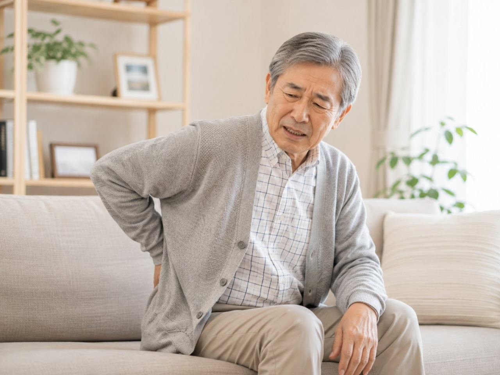

訪問鍼灸マッサージを頼みたいと思っても、まず気になるのが「うちの家まで来てもらえるのか」という点だと思います。遠方だと断られないか、距離が延びると交通費を上乗せされないか、心配は尽きません。のびのび訪問施術院は、大阪府北部と大阪市の一部、兵庫県の一部へ、国家資格を持つ施術者がご自宅まで伺っています。この記事では、どこまで来てもらえるのか、対応エリアと範囲の考え方を具体的にお伝えします。
要点から。のびのびが伺うのは、大阪府の豊中市・吹田市・茨木市・高槻市・箕面市・摂津市・池田市、大阪市の淀川区・東淀川区・都島区・北区・旭区、兵庫県の尼崎市・伊丹市です。このエリア内であれば、表示の料金のほかに別途の出張費（出張料・交通費）はいただかず、どこへ伺っても同じ料金です。保険が使える場合、自己負担は1割の方で1回およそ395円（総額3,950円）が目安。市境や隣接地域、施設への訪問など、迷うときはまず住所をお聞かせいただければ、伺えるかどうかその場でお答えします。
まずは、お住まいの地域を教えてください
「うちまで来てもらえるのかな」。訪問施術を検討するとき、多くの方が最初に気にされるのがこの点です。のびのび訪問施術院では、施術者がご自宅や入居先の施設まで直接伺います。ですから、体調やお身体の都合で外出がむずかしい方でも受けていただけます。まずは、あなたのお住まいがどこかを教えてください。それがわかれば、対応できるかどうかはその場ではっきりお答えできます。
以下では、実際にどの地域まで伺っているのか、料金や保険のしくみはどうなっているのかを、順を追って具体的にご案内します。
のびのびが伺う14の市区
対応しているのは、大阪府北部を中心とした地域です。まず大阪府では、豊中市・吹田市・池田市・箕面市と、その東側にあたる茨木市・摂津市・高槻市。次に大阪市内は、淀川区・東淀川区の北部エリアに加えて、都島区・北区・旭区。そして兵庫県側では、大阪と隣り合う尼崎市・伊丹市。この14の市区が、日ごろ伺っている範囲です。
市区ごとに、うかがえる範囲や地域ごとのご相談の傾向をまとめたページもあります。大阪府側は豊中市、吹田市、茨木市、高槻市、箕面市、摂津市、池田市。大阪市内は淀川区、東淀川区、都島区、北区、旭区。兵庫県側は尼崎市と伊丹市です。お住まいの市区のページから読んでいただくと、駅や地区の名前を挙げてご案内しています。
症状のほうから探したい場合は、部位別にまとめた訪問鍼灸マッサージで相談の多い症状｜どこがつらいかで記事を探すと、持病や体の状態からたどれる持病や体の状態から探す｜訪問鍼灸マッサージで何ができるのかをご用意しています。
それぞれの地域については、たとえば豊中市の訪問鍼灸マッサージや尼崎市の訪問鍼灸マッサージのページで、より詳しくご紹介しています。ご自身のお住まいに近いところがあれば、あわせてご覧ください。
エリア内なら、どこでも同じ料金です
訪問と聞くと、遠いほど交通費がかさむのではと心配される方がいます。のびのびの場合、対応エリア内であれば距離によって料金が変わることはありません。駅の近くでも、少し奥まった住宅地でも、伺う費用は同じです。別途の出張費や交通費をいただくこともありません。
これは、範囲をあらかじめこの14市区に絞って活動しているからできることです。無理に広げすぎず、通える範囲を丁寧に回る。そうすることで、追加費用のない一律の料金を保っています。「隣町だから割高になるのでは」といった心配は、していただかなくて大丈夫です。
ご自宅でも、施設でも伺います
伺う先は一戸建てに限りません。マンションや団地などの集合住宅でも問題なく施術します。エレベーターのない建物や、少し入り組んだ場所であっても、事前に伺い方を確認したうえでお邪魔します。
介護施設や高齢者向け住宅に入居されている方からのご相談も少なくありません。施設によっては、あらかじめ担当の方に一言お伝えいただくとスムーズです。ご本人が動きづらい状況でも、こちらから出向く形なので、通院という負担そのものがなくなります。ご家族が付き添う手間も省けます。
費用と保険のしくみ
のびのびの施術は、1回あたりの総額が3,950円です。医療保険（療養費）を使える方は、この一部を負担するだけで済みます。自己負担が1割の方なら1回およそ395円ほど。たとえば週2回のペースで続けた場合、1割負担の方の月の負担はおよそ3,160円が目安になります。
保険を使うには、医師の同意書が必要です。ただし要介護認定は条件ではありません。介護保険を利用中の方でも、その限度額とは別の枠として併用できますので、ケアプランを圧迫しません。関節を動かしたり筋力の低下を防いだりする機能訓練も、鍼灸に加えるケアとして行っています。これらについて別途の料金はいただきません。神経痛やリウマチ、頸肩腕症候群、五十肩、腰痛症、頸椎捻挫後遺症といったお身体の状態が、保険の対象として想定されています。効き方には個人差がありますので、まずはご相談のうえで様子を見ていただければと思います。
エリアの境目にお住まいの方へ
ここまで14の市区を挙げてきましたが、地図の線できっちり区切れるものでもありません。市の境目あたりにお住まいだったり、隣接する地域で「うちは少し外れているかも」と感じたりする方もいるはずです。そうしたときこそ、自己判断であきらめずに一度声をかけてください。
実際の道のりや状況によっては、対応できる場合があります。逆に、正直にむずかしいとお伝えすることもあります。どちらにしても、電話やメールでお住まいを伝えていただければ、その場で確かめられます。「来てもらえるだろうか」という不安を抱えたままにせず、まずは気軽にお問い合わせください。
関東からのお問い合わせについて
ここまでご案内してきた14の市区は、大阪院からうかがうエリアです。当院にはもうひとつ、東京の二子玉川に玉川院があります。関東の方は、そちらからうかがっています。
東京都は世田谷区（二子玉川・用賀・上野毛・等々力・尾山台・桜新町など）、神奈川県は川崎市の宮前区・高津区、横浜市の都筑区・青葉区が中心です。料金や保険のしくみ、同意書の段取りは大阪院と同じです。玉川院へのお問い合わせは0120-641-104へどうぞ。
よくある質問
うちまで来てもらえますか？
お住まいの地域や住所をお聞かせいただければ、伺える範囲かどうかをその場でお答えします。対応エリアは、大阪府の豊中市・吹田市・茨木市・高槻市・箕面市・摂津市・池田市、大阪市の淀川区・東淀川区・都島区・北区・旭区、兵庫県の尼崎市・伊丹市です。
対応エリアの一覧に載っていない地域ですが、無理ですか？
市境や隣接する地域は、状況によって伺える場合があります。一覧だけで判断せず、まず住所をお聞かせください。伺えるかどうか、あるいは近くの選択肢について、分かる範囲でご案内します。
遠いと交通費がかかりますか？
伺える範囲のご自宅であれば、表示の料金のほかに別途の出張費（出張料・交通費）をいただくことはありません。距離によって料金が変わることもなく、エリア内はどこへ伺っても同じ料金です。
マンションでも受けられますか？
はい。集合住宅でも戸建てでも伺います。エレベーターのない建物や駐車の場所など、気になる点はあらかじめお知らせいただければ調整します。準備は横になれるスペースがあれば十分です。
施設に入っていても頼めますか？
対応エリア内で条件が合えば、施設に入っている方のところへも伺えることがあります。施設ごとに外部の施術者に関する決まりがある場合もあるため、施設のご担当者やご家族を通じてご相談ください。
要介護認定を受けていませんが、使えますか？
はり・きゅうやマッサージの医療保険は、医師が必要と認めて同意書を出せば、要介護認定がなくても使えます。判断の中心は介護度ではなく、通院がむずかしい状態かどうかと医師の同意です。同意書の手続きはのびのびが進めます。
料金は距離や地域で変わりますか？
変わりません。1回の総額は3,950円で、1割負担の方はおよそ395円が目安です。エリア内であれば、どの市・区へ伺っても同額で、別途の出張費もかかりません。費用は医療保険で計算し、介護保険の限度額とは別枠です。
自分が対象になるか分からないのですが、どうすれば？
無理に自己判断せず、まず一度ご相談ください。お住まいの地域や住所、体の困りごと、通院の状況をお聞かせいただければ、伺える範囲か、対象になりそうか、どのくらいの頻度でどう進めるかの見通しを、分かる範囲でお伝えします。

訪問鍼灸マッサージは誰が受けられる？対象になる人の条件をわかりやすく整理
続きを読む
施設でも訪問鍼灸マッサージは受けられる？施設種別ごとの可否を一覧でわかりやすく解説
続きを読む
訪問鍼灸マッサージの施術者は国家資格を持つ？はり師・きゅう師の資格をわかりやすく
続きを読む
訪問鍼灸マッサージは土日・祝日・夜間も受けられる？対応時間と予約のこと
続きを読む
摂津市で膝の痛みにお悩みの方へ｜自宅で受ける訪問鍼灸マッサージ
続きを読む